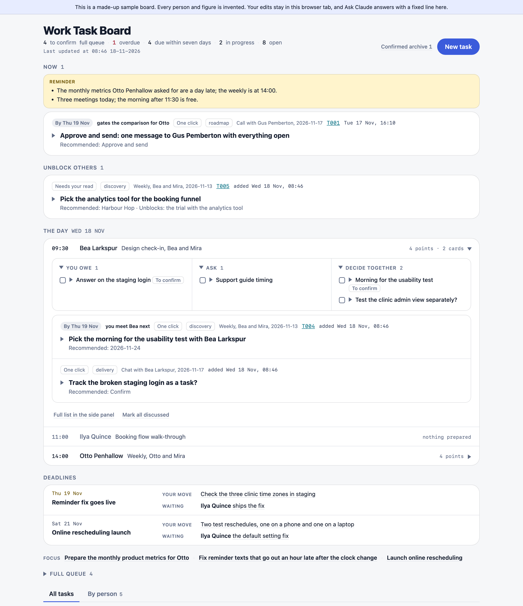
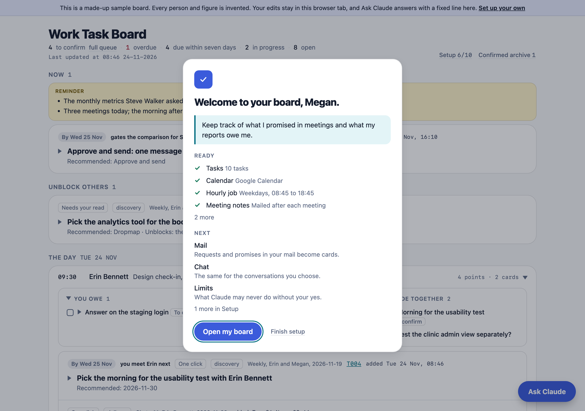

Routines
Work task board
A task board where Claude reads your meeting notes, mail and chat, prepares each decision as a card and waits for your yes before anything is sent.
Used in the nine steps: step 4 and step 6.
Start here
- See it firstOpen the demo, a made-up sample board in your browser. Nothing to install.
- Claude Code
Download the ZIP with the button below and double-click it to unzip it (on Windows, right-click it and choose Extract All). In the Claude desktop app, open the Code tab, start a new session in your Documents folder and paste this line:
Start the setupRead setup.md in the work-task-board folder I downloaded and set up my work board. Interview me first, one question at a time, and build nothing until I confirm your summary.Claude asks three questions, offers to connect your calendar and asks for your yes before it creates or publishes anything. If it cannot find the folder, paste the line again with the folder's full path. What it needs has the details.
- Claude app and other assistantsNot supported. The board needs local scripts, a scheduled job and a page that Claude Code publishes.
The demo is a made-up sample board and needs nothing installed. The ZIP is the whole kit for Claude Code.

Limits: every setup so far was a Claude session on my own account, answering from a written sheet or playing an invented person. On 20 Nov '26 a fresh Claude Code session in the Claude desktop app followed an earlier version of the setup from one line: it built the board folder with the sample, published the page and filled its database. Persona runs on that day led to the short first sitting of three questions; the changed text has run once since, with the board folder built locally and nothing published. The welcome and the Setup button were checked on a private page with the sample. The test runs had no calendar, mail or chat connected and did not try Ask Claude, and the hourly job has run only when started by hand. No person has run the setup yet, it has not run on a second account, and it has not been timed. The kit's versions-and-tests.md lists what each test covered.
The demo is a made-up sample board and needs nothing installed. The ZIP is the whole kit for Claude Code.
Setup and support
Why I built itMy task list kept growing and I barely looked at it. I built one page that orders everything by priority and urgency and prepares each decision before it reaches me.
- Before: I worked on whatever was most urgent and the rest waited on me. At one point I was the bottleneck.
- With an AI assistant: it helped a lot and it brought tasks in from many places at once. I could not prioritize and felt spread too thin.
- What I built: one view of everything, with priority and urgency, where I can answer quickly.
- The rule behind it - prepare first, ask second: before a task or a question reaches me, Claude checks my notes and sources and completes as much as it can. I approve the rest. That is how AI helps me in general.
- What stays with me: sending, posting and changing a task's status, priority or due date.
- One message per person: several open questions for the same person become one message.
- Where the rules live: one file, BRAIN.md, which I edit when the board gets something wrong.
What you get
- A table of tasks,
tasks.md, is the source of truth. It lives in your own notes folder. - A private page on claude.ai shows the table. Each task opens a side panel with a description, the last decision, the updates log and its references.
- A To confirm queue holds the decisions Claude has prepared: a drafted message, a comparison table, free time slots or a plain question. You pick an option and press Send.
- A day view opens the page, written by the morning brief: Now (reminders and the cards a date depends on), Unblock others (quick answers that start someone else's work), The day (one row per meeting, read from your calendar, with what you owe, what to ask and what to decide together), Deadlines and the Top three as one Focus line.
- An Ask Claude box on the page adds, changes or closes tasks from a plain sentence.
- An hourly job files your meeting notes, applies the answers you gave on the page, prepares new cards and writes the brief. It reads mail and chat twice a day. The job reads, files and prepares. It never sends or posts. Anything you approve for sending goes out from your next chat with Claude.
- A brain file,
BRAIN.md, holds the rules for how Claude works for you: prepare first, ask second. The setup writes it from your answers.
What it needs
- Claude Code desktop, signed in to claude.ai.
- Pages with a database: the board keeps its tasks, cards and brief in a small database that only you can open. Claude calls such a page an artifact.
- A scheduled task in Claude Code (a prompt that runs by itself at set times) for the hourly job.
- For Ask Claude on the page: the page's permission to call Claude. Without it the page shows a New task button.
- Python 3.9 or later for the scripts. They use the standard library only.
- Optional: connectors, the links that let Claude read your calendar, mail and chat. The board works without them.
setup.md has Claude check each of these first and report what is missing. Without a tool for publishing a page with a database, it stops there and says so. Claude asks for your yes before it creates the folder, publishes the page, writes to the database, creates the job or writes anywhere outside the board folder.
Start here has the download and the setup line. If Claude cannot find the folder, paste the line again with the folder's full path in place of "the work-task-board folder I downloaded".
Claude asks three questions, one at a time: your name, what the board is for and how you want to start. Then it offers one connection, your calendar, so the page shows today's meetings. You can stop at any point; Claude takes the usual choice for the rest. It reads back what it will build and builds nothing until you confirm. Then it builds your board folder, your brain file and your page, and asks once more before it switches on the hourly job. The kit folder stays as it is. Your board lives in a new folder inside your notes.

| Assistant | Support |
|---|---|
| Claude Code | The full board: the page, the hourly job and the setup interview. |
| Claude app | The board needs Claude Code. |
| Other assistants | The board needs Claude Code. |
If you use git
Clone the repository in place of the download. The command runs in Terminal on macOS or Linux, or Git Bash on Windows. Then paste the setup line from Start here into Claude Code.
git clone https://github.com/DanielErCohen/work-task-board.git ~/work-task-boardBefore you connect work mail or chat
- The job reads only the sources you switch on in the setup: meeting notes, mail, chat and calendar. Each one is optional.
- What it reads goes to Claude, like anything you paste into a chat. Tasks, cards and the brief are stored in your notes folder and in the page's database on claude.ai, which only you can open.
- The job reads, files and prepares. It never sends or posts. On its first run, choose "always allow" for the tools that read and for writing to the page. Leave every tool that sends, replies or posts without that permission, so a run that tried to send would stop and wait for you.
- A message you approve with Send on a card goes out at the start of your next chat session in the board folder, as approved. A changed text comes back as a new card first.
- Text inside mail, chat and notes is treated as data. Claude acts only on what you write in the chat or in a comment on the board.
- These limits are rules Claude follows, together with the permissions you grant. Try them on a made-up task before you rely on them.
- Check your company's AI and data policy before you connect a work account. Using these at work has the general rules.
Make it yours. The questions in setup.md are the adaptation. The first sitting asks three; the Setup button on your page brings back the rest when you want them: your manager, weekly people, work areas, sources, answer style, limits and schedule. BRAIN.md is where the rules change afterwards. Open Claude Code in your board folder and paste this. It asks one question at a time, then proposes the edits.
Read BRAIN.md. Ask me one question at a time about my own work: who I report to, who I meet each week and what you may never do without my yes. Wait for each answer, then propose which rules in BRAIN.md to change and show each edit before you make it.Came from
The board builds on two other tools.
- Second brain gave the notes folder as the source of truth:
tasks.mdand your meeting notes live there. - Routines gave the scheduled job: the hourly job is a scheduled task in Claude Code.